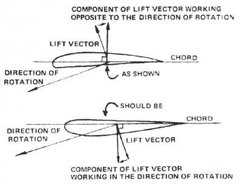
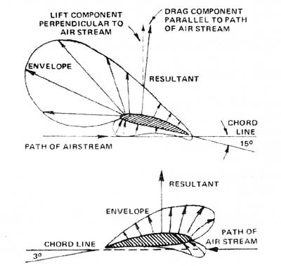

I think that the blades an the Sencenbaugh 02 Powered Delight (as shown in the illustration on page 35 and the photo on page 32 of MOTHER NO. 20) are mounted with the curvature of the airfoil in the wrong direction. My illustrations are intended to demonstrate that if the blades are mounted as shown in the article, the lift vector of the airfoil-which is perpendicular to a chord drawn between the leading edge and the trailing edge-will have a component opposite to the direction of rotation. The purpose of the fan is to extract energy from the wind by turning its movement into rotational motion of a shaft. Since rotation is what you're after, it seems counterproductive to have the lift of the airfoil pulling against that very action.
If blades are mounted with the curved side away from the wind (that is, the wind coming from the top of the page in my sketches), the lift vector has a component working in the direction of rotation. I wish I could explain that a little less pedantically and a little more poetically, but I said it as clearly as I could. Take a look at some store-bought wind chargers and windmills and see if I'm not right.
author unknown
Romayor, Tex.
The drawing on page 35 of MOTHER NO. 20 is a correct and accurate representation of how the blades were originally built. It was my intention initially to attempt to make the blades self-limiting ... hence the configuration as illustrated. The effective pitch angle was set at 15-16 degrees from the chord line, which provided good low-speed response and sufficient rpm for charge.
Since the article was written and the plans drawn, we have been using a new prop made of laminated birch-ply with the airfoil (retaining the "Clark Y") on the conventional side and with a twisted effective pitch (15 at root to 3 degrees at tip) along its length. The performance, naturally, is greatly improved. I've been sending out supplementary plans (at no extra charge to the buyer) along with instructions on how to rewind the existing alternator to obtain charge at lower speed. With the new prop and rewound alternator we are now obtaining charge in winds of 5 to 6 mph as compared to the 8 to 10 mph wind previously required. Therefore, I'm highly recommending these additional improvements to people now building a unit.
Also, the following modifications to the present plans were made:
[1] Each joint in the tower, besides being secured with Resorcinol and the galvanized nails, should have one 1-1/2 X 8-inch flat-headed wood screw added. Be sure to recess and predrill before adding the screw. This "mod" will prevent a poor joint (if the Resorcinol wasn't applied correctly) ... and will greatly add to the strength of the tower.
[2] The screen door spring, which holds the main vane in position, should be constructed of small-diameter wire (No. 20 AWG) and 1/2 inch in diameter. The tension should be adjusted just enough to hold the vane in its normal attitude in moderate (15 mph) winds. If a heavy-duty type spring (No. 16 AWG wire) is used, the pilot vane may not operate properly as designed.
It should be noted that the "Delight" was my first attempt at a small-scale plant . . . and it continues to improve. I'm working on a fly-ball type governor that gives a more linear response to change in pitch and rpm than the present governing mechanism, Also on the workbench is a matching device that will allow all three props to feather as one.
In addition to building up our sailwing, we are experimenting with forming props from paper honeycombed in a pressure mold and using a fiberglassepoxy skin on the outside. We hope to reduce the weight considerably and thereby further improve performance.
I'd like to thank MOTHER for running the article. The response has been very good ... and the resulting correspond ence with others enjoyable and informative. We're considering the production of a low-priced commercial plant-in the 400- to 700-watt area-in the near future. I'll keep you informed.
Jim Sencenbaugh
Palo Alto, Calif.
|
 ILLUSTRATIONS SHOWING SHAPE OF PRESSURE ENVELOPE AROUND AN AIRFOIL AND ITS RELATIONSHIP TO EFFECTIVE PITCH ANGLE. |
 |
|